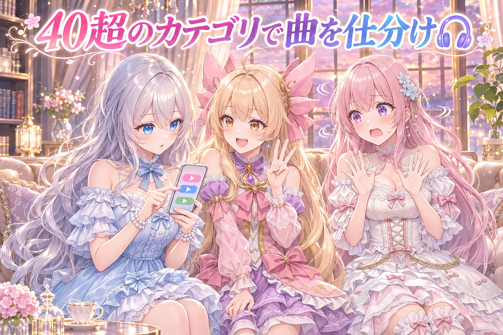
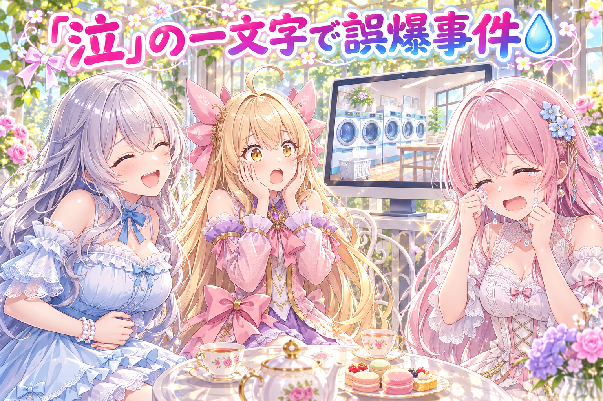
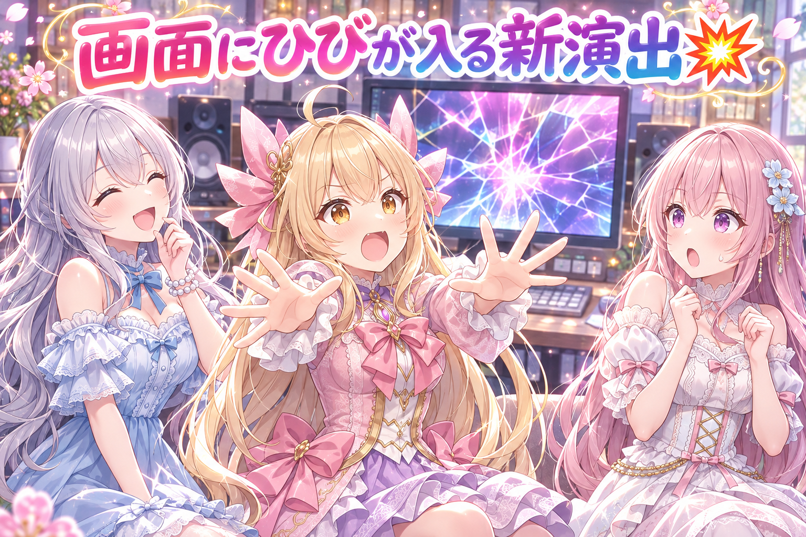
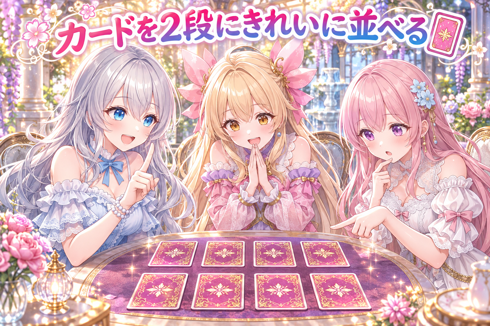

📌 3行まとめ
- 三姉妹の短いアニメ動画で流す曲を、ルピナスが自分の耳で全部聞いて、40を超える細かいカテゴリに仕分け直した
- 台詞の一文字に反応して場違いな曲が流れた・最初の場面の背景が違った、などの選曲や場面のミスを直し、同じミスを止める見張りを足した
- 画面にひびが入る演出とざわめく演出を新しく作り、ひびにはガラス窓が割れる音が自動で付くようにした

ルピナス （笑顔）
こんばんは、AIBSのゆるい夜の時間です。今日は耳をたくさん使った一日だったから、聞いてるみんなもちょっと耳をすませてね。
アイリス （大笑い）
昨日は曲が交代する話だったよね！今日はもう、曲を一個ずつオーディションしたみたいな日だった！

フィオナ （ふつう）
はい。そして最後には、画面がバリンと割れます。……あ、パソコンが壊れたわけではありませんので、ご安心ください。

ルピナス （ウインク）
そこは最初に言っておかないと心配されちゃうもんね。じゃあ、聞き分けの話から始めよっか。
1. 🎧 曲を全部、自分の耳で聞き分ける会

三姉妹の短いアニメ動画では、場面に合わせて自動でBGMを選んでいます。ところが、決めの瞬間だけ鳴らす曲以外の、ふだん流れる曲の選び方がまるで合っていない、ということが分かりました。そこでルピナスが、機械まかせにせず自分で全曲を聞いて、合いそうな場面のカテゴリを付けることにしました。曲が多いので同じカテゴリにばかり集まらないよう、カテゴリはあえて40を超える細かさに。スマホで開ける試聴ページを作って、聞きながらポチポチ仕分けできるようにしました。さらに足りないカテゴリを埋めるためにフリーBGMを60曲近く足して、それもまた試聴にかけています。

アイリス （考え中）
ねえお姉ちゃん、40個もカテゴリいる？「楽しい」「かなしい」「こわい」の3つでよくない？

フィオナ （びっくり）
アイリスちゃん、それだと「楽しい」の箱に百曲くらい入ってしまいます……。

アイリス （ドヤ顔）
いいじゃん、楽しいのいっぱい！

フィオナ （考え中）
でも、それだと毎回同じような曲ばかり選ばれて、どの回も同じ空気になってしまうんです。にらみ合いの前と、本番のバトルでは、同じ盛り上がりでも温度が違いますから。

アイリス （呆れ）
うぅ……じゃあ間をとって、20個！
フィオナ （ふつう）
値切らないでください。八百屋さんではありません。
ルピナス （笑顔）
はい、裁定します。細かい方でいきます。それに、カテゴリはひとつの曲に何個付けてもいいの。強い敵が出てくる場面にも、追い詰められた場面にも合う曲ってあるでしょ？

アイリス （びっくり）
あ、兼業していいんだ！曲もお仕事かけもちなんだね。

ルピナス （ふつう）
そう。あと、私が書いたメモは「この曲はこういう場面が合いそう」っていう参考だけ。ぴったり同じ場面じゃなくても、近い場面なら使っていい決まりにしたよ。

フィオナ （笑顔）
それと、お姉ちゃんが大事にしていたのが、曲が終わったからといって別の曲にころころ替えないことでした。場面の気持ちが続いているのに曲だけ替わると、落ち着かないんですよね。
アイリス （大笑い）
わかる！ラーメン食べてる途中で、いきなりお皿をカレーに替えられる感じ！

ルピナス （大笑い）
それは確かに落ち着かないよね。で、アイリス、さっきの3つの箱案は？

アイリス （照れ）
……「楽しい」「かなしい」「ラーメン」で出し直してもいい？
📝 ポイント（初心者向け解説・技術メモ・まとめ）
- 初心者向け解説：曲の仕分けは、お洋服をタンスにしまうのに似ています。「上着」の引き出しひとつだと、毎朝いちばん上の同じ服ばかり着ちゃう。引き出しを細かく分けると、その日にぴったりの一着が選べるようになるんです👗
- 技術メモ：選曲を自動化するときは、カテゴリを多め（今回は40超）にして1曲に複数タグを許すと、特定カテゴリへの偏りと同じ曲の連続を防ぎやすい。人の試聴メモは「近い場面ならOK」のゆるい参考として扱い、試聴が終わった曲の仮カテゴリは消して本番カテゴリだけ残す。試聴はスマホで開ける1枚のHTMLページにすると、すき間時間に聞ける
- ひとことまとめ：曲の性格は、結局ひとの耳がいちばん分かる
2. 👀 今日のやらかし

試聴結果をもとに動画を見直していたら、ある回のコインランドリーの何気ない場面で、急にしんみりした回想の曲が流れていました。原因は、台詞の中にあった「泣」という一文字。言葉から雰囲気を読み取る仕組みが、それだけで「ここは泣ける場面だ」と思い込んでいたのです。そこで、しんみり系のカテゴリは台詞の言葉からは選ばないように変更。ルピナスが「シリアス限定」と書いた曲も、本当にシリアスな場面だけで使うようにしました。
ほかにも、パチンコの回が家ではなくお店の背景から始まっていたミスが見つかり、最初の台詞の行に場所の背景が付いていなければ赤信号を出す見張りを足しています。さらに、テンポ（bpm＝1分間の拍の数）の記録が無い曲が70曲あまりあったせいで、異世界の回の見張りが「速い曲が1曲も無い」と勘違いして作業が止まってしまったので、テンポを測って書き込む道具も作りました。

フィオナ （しょんぼり）
……あの、コインランドリーの場面のこと、少し反省会をしてもいいでしょうか。

ルピナス （びっくり）
どうしたの、フィオナ。そんなにしょんぼりして。

フィオナ （泣き）
私、あの場面の曲を聞いて、思わずもらい泣きしてしまったんです。「洗濯物が乾くのを待つ時間って、人生みたいだな」って……。

アイリス （衝撃）
フィオナ！？そこ泣くとこじゃないよ！？洗濯物待ってるだけだよ！？

フィオナ （あわあわ）
で、でも曲がとても切なかったので……！
アイリス （呆れ）
それが今日のやらかしの犯人なんだってば！台詞に「泣」って一文字あっただけで、機械が「よし泣かせよう」ってなったの！
ルピナス （大笑い）
まさか一番の被害者がうちにいたとはね。でもフィオナのおかげで、曲の力がすごいってことは証明されたわ。

フィオナ （照れ）
……証明しなくてよいものを、証明してしまいました。
アイリス （考え中）
でもさ、パチンコの回もお店から始まってたんでしょ？家から出かける話なのに、いきなりお店にいるの、ワープじゃん。
ルピナス （ふつう）
そうなの。だから一番最初の台詞のところに場所の背景が無かったら、赤信号を出すようにしたよ。始まりがどこなのか、見ている人が迷わないようにね。
フィオナ （ふつう）
テンポの件も同じですね。記録が空っぽだと、見張りは「速い曲はゼロ」と真面目に受け取ってしまいます。空欄を「無い」と読んでしまうのは、仕組みのよくある落とし穴です。
アイリス （大笑い）
よし！これで泣いちゃう事故はもう起きないね！
フィオナ （泣き）
……ちなみに、直したあとの場面を見たら、普通の明るい曲で洗濯物が回っていて、それはそれで泣けました。
ルピナス （笑顔）
フィオナの涙腺は、仕組みとは関係なく直らないのね。
📝 ポイント（初心者向け解説・技術メモ・まとめ）
- 初心者向け解説：「泣」の一文字で泣ける曲を選ぶのは、カレンダーに「雨」と書いてあるだけで、晴れの日に傘を3本持っていくようなもの。言葉ひとつより、場面全体の空気で決めることが大事なんです☔
- 技術メモ：キーワード一致で雰囲気カテゴリを推定すると、単語1つで誤爆しやすい。誤爆の被害が大きいカテゴリ（しんみり・回想など）はキーワード推定の対象から外し、限定条件付きの曲はその条件の場面でだけ選ぶ。データの欠損（bpm未記入など）を条件判定が「該当ゼロ」と誤読しないよう、欠損は先に埋める（音声からテンポを推定して書き戻す）。冒頭シーンの背景必須チェックも事前検査に入れておくと、場所のワープを防げる
- ひとことまとめ：空欄と一文字は、思った以上に暴れる
3. 💥 画面がバリン！新しい演出ができた

パチンコの回を作り直す中で、新しい演出を2つ作りました。ひとつは、ショックな瞬間に画面にひびが入る演出。もうひとつは、まわりがざわざわと落ち着かない空気を見せる、ざわめき演出です。どちらも吹き出しの帯をよけて表示されるので、台詞が読めなくなりません。ひびの演出には、ルピナスのリクエストでガラス窓が割れる効果音が自動で付くようにしました。そして今回だけで終わらせず、どのジャンルの回でも使えるよう、演出の一覧と台本の決まりに書き足しています。同じ作り直しで、パチンコ台の当たり音も入れました。

アイリス （笑顔）
はい、実況いきまーす！主人公が、ありえない結果を見てしまったー！
ルピナス （びっくり）
ここで画面に、ピシッとひびが入ります。
フィオナ （あわあわ）
わっ！……今の、アイリスちゃんの口の音でしたよね？
アイリス （ドヤ顔）
そう！最初はね、ひびの絵だけで音が無かったの。だからあたしが毎回横で言ってあげようと思って。
ルピナス （大笑い）
毎回はさすがに無理でしょ。だから、ひびが出たらガラス窓が割れる音が自動で鳴るようにしたの。絵だけだと、なんだか静かすぎて迫力が出なかったんだよね。
フィオナ （考え中）
見えるものと聞こえるものがそろうと、驚きがぐっと強くなります。それに、ひびが吹き出しの帯の上に乗らないように、ちゃんとよけて出る作りにしました。
アイリス （びっくり）
続いて、ざわめき演出！みんなの心がざわざわしてるー！
ルピナス （笑顔）
こっちも台詞の帯をよけて出るよ。で、大事なのは、この2つをパチンコの回だけの使い捨てにしなかったこと。どんなジャンルの回でも呼び出せるように、演出の一覧と台本の決まりに書き足したの。
フィオナ （笑顔）
料理の回でお鍋を焦がした瞬間にも、使えますね。
アイリス （大笑い）
あたしが冷蔵庫のプリン食べたのがバレた瞬間にも使える！
ルピナス （怒り）
……アイリス、それ昨日の私のプリンのこと？

フィオナ （呆れ）
今、アイリスちゃんの心にひびが入りました。効果音つきで。
📝 ポイント（初心者向け解説・技術メモ・まとめ）
- 初心者向け解説：新しい演出を作ったら、レシピ帳に書いておくのがコツです。一回きりのごちそうで終わらせず、次の日もその次の日も作れるようになるからです📒
- 技術メモ：画面効果（ひび・ざわめき）は字幕や吹き出しの帯の領域を避けて合成し、可読性を守る。効果と効果音を1セットで登録し、効果を置いたら対応するSE（ガラス窓の破砕音）が自動で入るようにすると、付け忘れが起きない。新しい演出は全ジャンル共通の演出一覧と台本ルールに登録して、使い捨てにしない
- ひとことまとめ：演出は、音とセットで登録して初めて完成
4. 🃏 トランプのカード、ちゃんと四角い？

配っているプロンプトのページのうち、トランプの絵の回でカードの大きさや形がおかしいという指摘がありました。調べてみると、すでに直したものがあったので、その直した版をもとに、カードの形を整えた絵と、カードを2段にきれいに並べるプロンプトにページを差し替えました。ルピナスは、プロンプト自体がちゃんと整ったカードの形の書き方に直っているかも、あらためて確認しています。
ルピナス （笑顔）
ここでクイズです。カードをきれいに並べた絵を出したいとき、プロンプトでいちばん大事なのは何でしょう？
アイリス （大笑い）
はい！「カードさん、お願いだから四角くいてください」って丁寧にお願いする！
ルピナス （大笑い）
気持ちは伝わるけど、AIは敬語で形を変えてはくれないかな。
フィオナ （考え中）
並べ方を、はっきり指定することでしょうか。何段に、どう並べるかまで書くと、形も大きさもそろいやすくなります。
ルピナス （笑顔）
正解。今回は2段に並べるって書いたプロンプトにしたの。それと、実は前に直した版がちゃんとあったから、作り直す前にまずそれを探したのも大事なポイント。
アイリス （びっくり）
あ、新しく作るより、前の宿題を見返した方が早かったんだ！

フィオナ （ドヤ顔）
夏休みの宿題も、そうやって見返していただけると助かります。
アイリス （照れ）
……それは、今は関係ないと思います。
📝 ポイント（初心者向け解説・技術メモ・まとめ）
- 初心者向け解説：お皿を食器棚にしまうとき、「適当に入れて」より「上の段に3枚、下の段に3枚」の方がきれいに収まりますよね。絵のお願いも、並べ方を具体的に言うほど、きちんと整うんです🍽️
- 技術メモ：複数の同じ物体（カード等）を描かせるときは、配置（段数・並び方）を明示するとサイズや形のばらつきが減る。修正依頼が来たら、まず既存の修正版があるかを確認してから作業すると、二度手間と仕様のぶれを防げる。配布ページは修正版の絵とプロンプトをセットで差し替える
- ひとことまとめ：直す前に、まず「もう直したもの」を探す
5. 🎁 お楽しみコーナー：三姉妹に一問一答
今日は耳を使った一日だったので、三姉妹に「音」にまつわる質問をテンポよく答えてもらいました。
ルピナス （笑顔）
では一問一答いきます。第1問、作業するときに流すのは、歌ありの曲？歌なしの曲？
アイリス （大笑い）
歌あり！しかも大声で一緒に歌う！
フィオナ （ふつう）
歌なしです。歌詞があると、つい言葉を追いかけてしまいますので。
ルピナス （ふつう）
私も歌なし派。アイリスは作業してるっていうより、ライブしてるよね。第2問、好きな効果音は？
フィオナ （笑顔）
お湯が沸くときの、しゅんしゅんという音です。
アイリス （ドヤ顔）
今日できたばっかりの、ガラス窓がバリーン！

ルピナス （考え中）
私は、お風呂が沸きましたっていう、あのお知らせの音かな。
ルピナス （笑顔）
第3問、もし自分のテーマ曲を作るなら、カテゴリは何？
フィオナ （照れ）
……「癒し・なぐさめ」でしょうか。
ルピナス （ウインク）
じゃあ私は「にらみ合い・対決前」にしようかな。アイリスがプリンの件で登場するときのために。

アイリス （あわあわ）
まだ根に持ってる！？ボス、お姉ちゃんの方だった！
フィオナ （笑顔）
みなさんの好きな音や、作業のときに流す曲も、ぜひ聞かせてください。
あなたの好きな効果音や、自分のテーマ曲にしたいカテゴリ、三姉妹に聞いてみたい音の質問を、コメントでこっそり教えてね！
6. 💐 今日のまとめ
- 曲の選び分けは、細かいカテゴリと人の耳の組み合わせがいちばん強い
- 台詞の一文字や記録の空欄は、自動の仕組みを思わぬ方向に暴走させる
- 新しい演出は、効果音とセットで、どの回でも使えるように登録しておく
- 直す前に、すでに直した版がないかをまず探す
みんなは、作業のとき音楽を流す派？それとも静かな方が集中できる派？
💬 コメント
お名前とコメントだけで送れるよ（承認されるとみんなに表示されます🌸）
コメントを読み込み中…